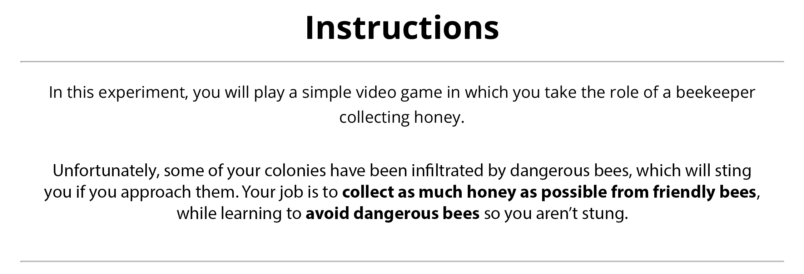

<!DOCTYPE html>

<html>
  <head>
    <meta charset="utf-8">
    <meta name="viewport" content="width=device-width, initial-scale=1, shrink-to-fit=no">
    <title>UNSW HoneyHarvester Game</title>
    <script src="./js/jspsych.js"></script>
    <script src="./js/plugins/jspsych-fullscreen.js"></script>
    <script src="./js/plugins/jspsych-instructions.js"></script>
    <script src="./js/plugins/jspsych-html-keyboard-response.js"></script>
    <script src="./js/plugins/jspsych-html-button-response.js"></script>
    <script src="./js/plugins/jspsych-image-keyboard-response.js"></script>
    <script src="./js/plugins/jspsych-external-html.js"></script>
    <script src="./js/plugins/jspsych-survey-html-form.js"></script>
    <script src="./js/welcome.js"></script>
    <script src="./js/jquery.min.js"></script>
    <link href="./js/css/jspsych.css" rel="stylesheet" type="text/css"></link>
  </head>

  <body>
    <div id="welcome"></div>
  </body>


  <script>


  // run the welcome
  welcome.run();


    // -------- Set up --------
    /* initialise timeline*/
    var timeline=[];
    var introloop=[];
    var turkcode = 'C' + (Math.floor(Math.random() * 899999) + 100000).toString();
    var filename = "unsw-learningbees-JL3_"+ turkcode;    
	  var images = [
      './img/instruct-1.jpg',
      './img/instruct-2-FG-partial.jpg',
      './img/instruct-3-4d.jpg',
      

      './img/A0-B0-L0-W0.jpg',
      './img/A0-B0-L0-W1.jpg',
      './img/A0-B0-L1-W0.jpg',
      './img/A0-B0-L1-W1.jpg',
      './img/A0-B1-L0-W0.jpg',
      './img/A0-B1-L0-W1.jpg',
      './img/A0-B1-L1-W0.jpg',
      './img/A0-B1-L1-W1.jpg',
      './img/A1-B0-L0-W0.jpg',
      './img/A1-B0-L0-W1.jpg',
      './img/A1-B0-L1-W0.jpg',
      './img/A1-B0-L1-W1.jpg',
      './img/A1-B1-L0-W0.jpg',
      './img/A1-B1-L0-W1.jpg',
      './img/A1-B1-L1-W0.jpg',
      './img/A1-B1-L1-W1.jpg',
	   ];

      // Code which stops participants from refreshing (or leaving the page) without a warning
      window.onbeforeunload = function(){
        return "Are you sure you want to leave the experiment?";
      };
	  
    
	function startExperiment(){

      // record the turkcode in the jsPsych data
      jsPsych.data.addProperties({
        turkcode: turkcode,
        condition: 'freqGain',// frequent gain condition
        browserinfo: navigator.userAgent, 
      });
         
      function saveData(name, data){
        var xhr = new XMLHttpRequest();
        xhr.open('POST', 'save_data.php');
        xhr.setRequestHeader('Content-Type','application/json');
        xhr.send(JSON.stringify({filename: filename, filedata: data}));
      };
   

      jsPsych.init({
        timeline: timeline,
        preload_images: images,
        /*on_finish: function() {
          jsPsych.data.get().localSave('csv','test.csv')
         }, // uncomment to locally save data file */
        show_progress_bar: false,
        auto_update_progress_bar: false,
        on_finish: function(data){
          saveData(filename, jsPsych.data.get().csv());
          document.write('<div id="endscreen" class="endscreen" style="width:1000px"><div class="endscreen" style="text-align:center; border:0px solid; padding:10px; font-size:120%; width:800px; float:right"><p><br><br><br>All done!<br><br>Your completion code is <span id="turkcode" style="font-weight:bold;font-size:130%">' + turkcode + '</span>. To receive payment for the HIT, return to the Amazon Mechanical Turk page and enter this code. Please contact us if something goes wrong and we\'ll fix it as quickly as possible.</p></div></div>')
        }
      });  

    } 

    // function to end the experiment
    function endExperiment(dataset,callback) {
      // $.post('submit',{"content": dataset}); // uncomment to post data
      console.log(dataset) // comment out to avoid console log
      setTimeout(callback,1000)
      // setTimeout specifies after a certain no of milliseconds
    }


    // -------- set up accumulating variables
    var i = 0; // for showing the next learning phase bee
    var k = 0; // for showing the next test phase bee
    var m = 0; // for keeping track of feedback trials
    
    
    // -- for points
    var pointsInitial = 50;
    var points = [0,0];
    var earnedAll = []; // array of all points accumulated by participant, each new trial is pushed to end of array
    var possibleAll = []; // array of all POSSIBLE points, each new trial is pushed to end of array

    function addNum(pointsInitial,points){
      return pointsInitial+points[0]
    };

    var pointsCurrent = addNum(pointsInitial,points);

    pointsCurrent = addNum(pointsCurrent,points);


    // -- for total possible points (feedback trials)

    function addPPoints(pointsInitial,points){
      return pointsInitial+points[1]
    };

    var possiblePoints = addPPoints(pointsInitial,points);

    possiblePoints = addPPoints(possiblePoints,points);


    // -------- Randomisation set up

  function shuffle(array) {
    var currentIndex = array.length, temporaryValue, randomIndex;

    // While there remain elements to shuffle...
    while (0 !== currentIndex) {

      // Pick a remaining element...
      randomIndex = Math.floor(Math.random() * currentIndex);
      currentIndex -= 1;

      // And swap it with the current element.
      temporaryValue = array[currentIndex];
      array[currentIndex] = array[randomIndex];
      array[randomIndex] = temporaryValue;
    }

    return array;
  }
 
  // ------- Feedback Condition
  var feedback = ['intermittent_1', 'intermittent_2'];
  var feedback = jsPsych.randomization.sampleWithoutReplacement(feedback, 1)[0];


  // ------- Payoff Condition
  var payoff = ['single']; 
  var payoff = jsPsych.randomization.sampleWithoutReplacement(payoff, 1)[0]; 


  // ------- Feedback Array
  var feedbackArray = [17, 18, 19];
  var feedbackArray = jsPsych.randomization.sampleWithoutReplacement(feedbackArray, 2);
  var feedbackArray2 = [17, 18, 19];
  var feedbackArray3 = feedbackArray.concat(feedbackArray2); // five feedback trials throughout experiment, randomised with constraints (no more than two repetitions of the same number)
  var feedbackArray3 = shuffle(feedbackArray3);
  var start = 16; // no feedback trials in first block

  var feedbackTrial = []
  feedbackTrial[0] = feedbackArray3[0] + start;
  feedbackTrial[1] = feedbackTrial[0] + feedbackArray3[1];
  feedbackTrial[2] = feedbackTrial[1] + feedbackArray3[2]; 
  feedbackTrial[3] = feedbackTrial[2] + feedbackArray3[3];
  feedbackTrial[4] = feedbackTrial[3] + feedbackArray3[4]; // making trial numbers cumulative

  var feedbackTrial1 = feedbackTrial[0];
  var feedbackTrial2 = feedbackTrial[1];
  var feedbackTrial3 = feedbackTrial[2];
  var feedbackTrial4 = feedbackTrial[3];
  var feedbackTrial5 = feedbackTrial[4];

  var feedbackTrialDisplayed = [];

  if (feedback == "intermittent_1"){
    feedbackTrialDisplayed = feedbackTrial[0]
  } else if (feedback == "intermittent_2"){
    feedbackTrialDisplayed = [0,3].map(x=>feedbackTrial[x]); // function to get 1st and 4th elements from feedbackTrial
  } // i.e., first dose after block 2

  // ------- Permutation for relevant dims
  var targetComb = [
    'A1B1','A0B1','A1B0','A0B0',
    'A1L1','A0L1','A1L0','A0L0',
    'A1W1','A0W1','A1W0','A0W0',
    'B1L1','B0L1','B1L0','B0L0',
    'B1W1','B0W1','B1W0','B0W0',
    'L1W1','L0W1','L1W0','L0W0',
    ];

  var targetComb = jsPsych.randomization.sampleWithoutReplacement(targetComb, 1)[0]; 

  jsPsych.data.addProperties({
          targetComb: targetComb,
          feedback: feedback,
          payoffCondition: payoff,
          feedbackTrials: feedbackTrialDisplayed,
  });

  // take the first section and the section section of combination
  // if bee image name includes these two dimension/value combinations then it's the target combination
  function isConjunctionBee(lastBee){
    return lastBee.includes(targetComb.substr(0,2)) && lastBee.includes(targetComb.substr(2,4))
  };

  // ------- Bee stimuli

  var bees_OG = shuffle(
    [
      'A0-B0-L0-W0',
      'A0-B0-L0-W1',
      'A0-B0-L1-W0',
      'A0-B0-L1-W1',
      'A0-B1-L0-W0',
      'A0-B1-L0-W1',
      'A0-B1-L1-W0',
      'A0-B1-L1-W1',
      'A1-B0-L0-W0',
      'A1-B0-L0-W1',
      'A1-B0-L1-W0',
      'A1-B0-L1-W1',
      'A1-B1-L0-W0',
      'A1-B1-L0-W1',
      'A1-B1-L1-W0',
      'A1-B1-L1-W1'
    ]   
  );
 

 // depending on permutation, which are the dangerous and friendly bees
// i.e. conjunction bees

  // return array with all target combo bees
  function makeConjunctionBees(bees_OG){
    return bees_OG.includes(targetComb.substr(0,2)) && bees_OG.includes(targetComb.substr(2,4))
  };

  var conjunctionBees = bees_OG.filter(makeConjunctionBees);

// show 6 friendly and 2 dangerous bees every 8 bees

function makeBees(){ 

  var bees_dangerous =  shuffle(conjunctionBees); // shuffle dangerous bees (4/16)
  var bees_friendly = bees_OG.filter(function(item) {
    return !conjunctionBees.includes(item); 
  }); // what is left over of all bees excluding the dangerous ones. i.e., friendly bees 
  var bees_friendly = shuffle(bees_friendly); // shuffle friendly bees (12/16)

  var bees_dangerous_1 = bees_dangerous.slice(0,2); //dangerous bees for first subblock of block, 2 dangerous
  var bees_friendly_1 = bees_friendly.slice(0,6); // friendly bees for first subblock of block, 6 friendly
  var bees_dangerous_2 = bees_dangerous.slice(2,); // '' for second subblock of block, 2 dangerous
  var bees_friendly_2 = bees_friendly.slice(6,); // '' for second subblock of block, 6 friendly

  var first_subblock = shuffle(bees_dangerous_1.concat(bees_friendly_1)); // combine friendly and dangerous and shuffle to form first subblock
  var second_subblock = shuffle(bees_dangerous_2.concat(bees_friendly_2)); //combine friendly and dangerous and shuffle to form second subblock
  var beesStim = first_subblock.concat(second_subblock);
  return beesStim;

};

var bees = []; // initiate bees array

for (var j = 0; j < 10; j++) {
  bees = bees.concat(makeBees());  // now repeat the makeBees function 10 times, concatenating each time
}                           
                                 
// take the first 128 bees for learning phase, leave 32 for test phase.

var LP_bees = bees.slice(0,128); // Learning phase bees
var TP_bees = bees.slice(128,); // Test phase bees

// -------- Enter fullscreen
timeline.push({
  type: 'fullscreen',
  fullscreen_mode: true,
  message: "<p>The experiment will switch to full screen mode when you press the button below.</p>" +
  "<p><b>Please make sure you stay in full screen mode throughout the experiment.</b></p>"+
  "<p>You will first read some instructions. Please note that you may need to scroll down to the bottom of the page to view all the instructions.</p>"
});

// -------- Instructions & quiz --------
var instructionsSinglePayoff = {
    type: 'instructions',
    pages: ['</img>',
    '</img>',
    '</img>'
    ],
    show_clickable_nav: true,
    allow_backward: true,
};


// push a diff version depending on payoff condition
function instructionsShown() {
  if (payoff == "single") {
    return instructionsSinglePayoff;
  }
};

introloop.push(instructionsShown())

// -------- comprehension check

// baseline for the instructionscorrect variable
var instructioncorrect = false;

// correct answers based on tipCondition
var ansNoTip = '{"legs":"checked","body":"checked","wings":"checked","antennae":"checked","change":"no","telldangerous":"feature","avoidinfo":"noInfo"}';

// quiz for noTip condition

var quizNoTip = {
  type:'survey-html-form',
  html: '<p>Before beginning the experiment, you must answer a few simple questions to ensure you have read the instructions. If you do not answer all questions correctly, you will be returned to the start of the instructions and have a chance to retake this quiz.</p>' +
  '<p>Which of the following are features of the bee varieties?</p>' +
  '<input type="checkbox" name="legs" value="checked">Two or six legs <br> ' +
  '<input type="checkbox"  name="square" value="checked">Square or round body <br>' +
  '<input type="checkbox"  name="eyes" value="checked">Single or compound eyes <br>' +
  '<input type="checkbox"  name="body" value="checked">Stripes or spots on body <br>' +
  '<input type="checkbox"  name="sting" value="checked">Stinger or no stinger <br>'+
  '<input type="checkbox"  name="wings" value="checked">Single or double wings <br>' +
  '<input type="checkbox"  name="tall" value="checked">Tall or short body <br>' +
  '<input type="checkbox" name="antennae" value="checked">Antennae or no antennae' +
  '<p>Can a bee variety change from being friendly to dangerous or dangerous to friendly over time?</p>' +
  '<select id="change" name="change" class="form-control">' +
  '   <option value="noresp" SELECTED></option>' +
	'   <option value="yes">yes</option>' +
	'   <option value="no">no</option>' +
  '</select> <br>' +
  '<p>How can you learn to tell whether a bee variety is dangerous?</p>' +
  '<select id="telldangerous" name="telldangerous" class="form-control">' +
  '   <option value="noresp" SELECTED></option>' +
	'   <option value="color">Based on the color of the bee</option>' +
	'   <option value="feature">Based on the features of the bee</option>' + 
  '   <option value="smoke">Based on the order in which you see the bees</option>' +
  '</select> <br>' +
  '<p>What happens when you avoid a bee variety?</p>' +
  '<select id="avoidinfo" name="avoidinfo" class="form-control">' +
  '   <option value="noresp" SELECTED></option>' +
	'   <option value="noInfo">You do not learn if it was friendly or dangerous, and do not alter your bonus.</option>' +
	'   <option value="info">You learn if it was friendly or dangerous, but do not alter your bonus.</option>' +
	'   <option value="infoPlusBonus">You learn if it was friendly or dangerous and alter your bonus.</option>' +
  '</select> <br><br>',
preamble: '<b>Comprehension Check</b>',
  button_label: 'Submit',
  on_finish: function(data){
    if (data.responses == ansNoTip) {
            return instructioncorrect = true;
            } else {
            return instructioncorrect = false;
    }
  }
};

// instructions-quiz sequence for noTip condition

function quizShown() {
  return quizNoTip;
};

introloop.push(quizShown());

var showsplash = true;
var splash_screen = {
  type: 'html-button-response',
  timing_post_trial: 0,
  choices: ['Click here to read the instructions again'],
  on_trial_start: function() {setTimeout(function() {setDisplay("jspsych-btn","")}, 500)},
  is_html: true,
  stimulus: "Oh no! One of your answers was incorrect. Let's try again."
}

/* ...but push it to a conditional node that only shows it if the response was wrong */

var conditional_splash = {
  timeline: [splash_screen],
  conditional_function: function(data) {
    return !instructioncorrect // skip if correct
  }
}

introloop.push(conditional_splash);

/* finally, add the entirety of this introductory section to a loop node ... */

var loop_node = {
  timeline: introloop,
  loop_function: function(data) {
    return !instructioncorrect // stop looping if correct
  }
};

timeline.push(loop_node);

/* success trial */

var successtrial = {
  type: 'html-button-response',
  timing_post_trial: 0,
  choices: ['Click here to begin the experiment'],
  on_trial_start: function() { setTimeout(function() {setDisplay("jspsych-btn","")}, 500)},
  is_html: true,
  stimulus: '<p>Well done! This is now the last page of instructions.</p> <p>You\'re going to start experiment now.</p>'
};
timeline.push(successtrial); 

// --------------- SET UP FOR MAIN TASK
// functions for feedback displays

function showPoints(){
    var lastChoice = jsPsych.data.get().last(1).values()[0].button_pressed; // get last avoid/approach decision - approach = 0; avoid = 1
    var lastBee = jsPsych.data.get().last(1).values()[0].stimulus; // get last bee shown
    // change based on dim permutation
    if (lastChoice == 0 && (isConjunctionBee(lastBee))) { 
      return points = [-3,0]; // approached dangerous bee
    } else if (lastChoice == 0){
      return points = [1,1]; // approached friendly bee
    } else if (lastChoice == 1 && (isConjunctionBee(lastBee))) {
      return points = [0,0]; // avoided dangerous bee
    } else if (lastChoice == 1){
      return points = [0,1]; // avoided friendly bee
    }
  };


// -------- the experiment itself -------

// the learning phase
var decision_LP = {
    type: 'html-button-response',
    stimulus: function(){
      return ""
    },
    prompt: "Harvest honey from this hive?",
    choices: ['Harvest', 'Avoid'],
    on_finish: function(data){
      i = i + 1;
      data.i = i;
      return showPoints();
    },
    counter_displayed: function(data){
      return pointsCurrent;
    },
};

var feedbackPartial = {
  type: 'html-keyboard-response',
  is_html:true,
  choices: jsPsych.NO_KEYS,
  trial_duration: 2000,
  stimulus: function(){
    if (points[0] == 0) {
      return "You avoided this hive. You earned <b>" + points[0] + " </b>points."
    } else if (points[0] == 1){
      return "You successfully harvested honey! You earned <b>" + points[0] + " </b>point."
    } else if (points[0] == 2){
      return "You successfully harvested honey! You earned <b>" + points[0] + " </b>points."
    } else {
      return "Ouch, you were stung! You lost <b>" + Math.abs(points[0]) + " </b>points."
    }
  },
  on_finish: function(data){
    earnedAll.push(points[0]);
    pointsCurrent = pointsCurrent + points[0];
    data.earnedThis = points[0];
    data.earnedCumulative = pointsCurrent;
    possibleAll.push(points[1]);
    possiblePoints = possiblePoints + points[1];
    data.possibleThis = points[1];
    data.possibleCumulative = possiblePoints;
    data.pointGap = possiblePoints - pointsCurrent;
    data.i = i;
  }
};

var pointsFeedback = {
  type: 'html-keyboard-response',
  is_html:true,
  choices: jsPsych.NO_KEYS,
  trial_duration: function(){
    if (feedback == "intermittent_2"){
      if (i == feedbackTrial1 || i == feedbackTrial4) {
          return 10000
      } else {
          return 1
      }
    } else if (feedback == "intermittent_1")
    if (i == feedbackTrial1) {
          return 10000
      } else {
          return 1
      }
    },
  stimulus: function(){
    var pastEarnedPoints = earnedAll.slice(Math.max(earnedAll.length - 20, 0));
    var pastEarnedPoints = pastEarnedPoints.reduce((a, b) => a + b, 0);
    var pastPossiblePoints = possibleAll.slice(Math.max(possibleAll.length - 20, 0));
    var pastPossiblePoints = pastPossiblePoints.reduce((a, b) => a + b, 0);
    var gap = pastPossiblePoints - pastEarnedPoints;
    if (feedback == "intermittent_2"){
        if (i == feedbackTrial1 || i == feedbackTrial4 && pastEarnedPoints >= 0) {
          return "<p>In the past 20 trials, you have earned <b>" + pastEarnedPoints + "</b> points. The maximum number of points you could have earned in those trials is <b>" + pastPossiblePoints + "</b>.</p></br>" +
                "<p>There is a gap of <b>" + gap + "</b> points.</p>"
        } else if (i == feedbackTrial1 || i == feedbackTrial4 && pastEarnedPoints < 0) {
          return "<p>In the past 20 trials, you have lost <b>" + Math.abs(pastEarnedPoints) + "</b> points. The maximum number of points you could have earned in those trials is <b>" + pastPossiblePoints + "</b>.</p></br>" +
                "<p>There is a gap of <b>" + gap + "</b> points.</p>"
        } else {
          return ""
        }
    } else if (feedback == "intermittent_1"){
        if (i == feedbackTrial1 && pastEarnedPoints >= 0) {
          return "<p>In the past 20 trials, you have earned <b>" + pastEarnedPoints + "</b> points. The maximum number of points you could have earned in those trials is <b>" + pastPossiblePoints + "</b>.</p></br>" +
                "<p>There is a gap of <b>" + gap + "</b> points.</p>"
        } else if (i == feedbackTrial1 && pastEarnedPoints < 0) {
          return "<p>In the past 20 trials, you have lost <b>" + Math.abs(pastEarnedPoints) + "</b> points. The maximum number of points you could have earned in those trials is <b>" + pastPossiblePoints + "</b>.</p></br>" +
                "<p>There is a gap of <b>" + gap + "</b> points.</p>"
        } else {
          return ""
        }
    }
  },
  on_finish: function(data){
    data.i = i;
    if (feedback == "intermittent_2"){
        if (i == feedbackTrial1 || i == feedbackTrial4 ) {
        m = m + 1
        data.m = m
      }
    } else if (feedback == "intermittent_1"){
        if (i == feedbackTrial1) {
        m = m + 1
        data.m = m
      }
    }
  }
};

// learning phase timeline 


var learningPhase = {
  timeline: [decision_LP, feedbackPartial, pointsFeedback],
  repetitions: 128,
  randomize_order: false
};

timeline.push(learningPhase);

        
var TP_instructions = {
  type: 'html-button-response',
  is_html: true,
  choices: ['Continue'],
  stimulus: function(){
    if (payoff == 'single') {
      return "<p>You will now be tested on how well you have learned to harvest honey from friendly hives while avoiding dangerous hives.</p>" +
             "<p>As before, you will visit each of the beehives and have to decide whether to harvest honey from it or avoid it. There have been <b>no changes</b> to which bee varieties are friendly and which are dangerous.</p>" +
             "<p>Just like before, collecting honey <b>adds 1 point</b> to your bonus, getting stung <b>subtracts 3 points</b>, and avoiding a hive <b>adds 0 points</b>.</p>" +
             "<p>However, in the test phase you will <b>NOT</b> receive any feedback.</br>" +
             "You won't be able to see whether the bees were friendly or dangerous, and you won't see any changes to your bonus.</p>"
    } 
  }
};

timeline.push(TP_instructions);

// the test phase
var decision_TP = {
      type: 'html-button-response',
      stimulus: function(){
        return ""
      },
      prompt: "Harvest honey from this hive?",
      choices: ['Harvest', 'Avoid'],
      on_finish: function(data){
        k = k + 1;
        data.k = k;
      },
  };

var feedbackTP = {
  type: 'html-keyboard-response',
  is_html:true,
  choices: jsPsych.NO_KEYS,
  trial_duration: 1400,
  on_start: function(){
    var lastChoice = jsPsych.data.get().last(1).values()[0].button_pressed; // get last avoid/approach decision
    var lastBee = jsPsych.data.get().last(1).values()[0].stimulus; // get last bee shown
    // change based on  permutation
    if (lastChoice == 0 && (isConjunctionBee(lastBee))) { 
      return points = [-3,0];
    } else if (lastChoice == 0){
      return points = [1,1];
    } else if (lastChoice == 1 && (isConjunctionBee(lastBee))) {
      return points = [0,0];
    } else if (lastChoice == 1){
      return points = [0,1];
    }
  },
  stimulus: "", 
  on_finish: function(data){
    pointsCurrent = pointsCurrent + points[0];
    data.earnedThis = points[0];
    data.earnedCumulative = pointsCurrent;
    possiblePoints = possiblePoints + points[1];
    data.possibleThis = points[1];
    data.possibleCumulative = possiblePoints;    
    data.k = k;
  }
};

var testPhase = {
  timeline: [decision_TP, feedbackTP],
  repetitions: 32,
  randomize_order: false,
};

timeline.push(testPhase);
  
// posttask questionnaire

// randomise order of posttest questions
var beeEstimateQ = [
  "About what percentage of beehives do you think contained dangerous bees? (Enter a value between 0 and 100.)",
  "About what percentage of beehives do you think contained friendly bees? (Enter a value between 0 and 100.)",
];

var beeEstimateQ = jsPsych.randomization.sampleWithoutReplacement(beeEstimateQ, 2);


var endquestions_1 = {
  type: 'survey-html-form',
  preamble: '<b>You\'ve finished harvesting honey! Congratulations!</b>',
  html: '<p> We have a couple of short questions before you complete the experiment. </p>'+
  '<p><b>Q1.</b> ' + beeEstimateQ[0] + '</p>' +
  '<input type="number" min="0" max="100"  onKeyUp="if(this.value>100){this.value=\'100\';}else if(this.value<0){this.value=\'0\';}" id="estimateQ1" name="estimateQ1" required> <br> <br>',
  button_label: 'Continue',
  on_finish: function(data){
    data.estimateQ = beeEstimateQ[0].substring(57,63) // record whether question was about "friend" or "danger"
  },
};

var endquestions_2 = {
  type: 'survey-html-form',
  preamble: '<b>You\'ve finished harvesting honey! Congratulations!</b>',
  html: '<p><b>Q2. </b>' + beeEstimateQ[1] + '</p>' +
  '<input type="number" min="0" max="100"  onKeyUp="if(this.value>100){this.value=\'100\';}else if(this.value<0){this.value=\'0\';}" id="estimateQ2" name="estimateQ2" required> <br> <br>',
  button_label: 'Continue',
  on_finish: function(data){
    data.estimateQ = beeEstimateQ[1].substring(57,63) // record whether question was about "friend" or "danger"
  },
};

var endquestions_3 = {
  type: 'survey-html-form',
  preamble: '<b>You\'ve finished harvesting honey! Congratulations!</b>',
  html: 
  '<p><b>Q3.</b> Which feature\/s do you think were most useful for deciding whether a bee variety was friendly or dangerous?</p>' +
  '<input type="checkbox" name="legs" value="checked">Two or six legs<br>' +
  '<input type="checkbox"  name="body" value="checked">Stripes or spots on body<br>' +
  '<input type="checkbox"  name="wings" value="checked">Single or double wings<br>' +
  '<input type="checkbox" name="antennae" value="checked">Antennae or no antennae<br>' +
  '<p><b>Q4.</b> Did you use pen and paper or another external aid during the task? (Please be honest, your payment will not be affected!) </p>' +
  '        <input type="radio" name="penpaper" id="no" value = "no" >' +
  '        <label for="no">No</label><br>' +
  '        <input type="radio" name="penpaper" id="yes" value = "yes" required>' +
  '        <label for="yes">Yes</label><br>' +
  '        <br><br>',
  button_label: 'Continue',
};

var questionnaire = {
  type: 'survey-html-form',
  preamble: 'Last question!',
  html: '<p>Q5. On a scale of 1-10 (where 10 is the most engaged), please rate how <b>ENGAGING</b> you found this task:</p>' +
  '        <input type="radio" name="engagement" id="10" value = "10" required>' +
  '        <label for="10">10 – Very engaging</label><br>' +
  '        <input type="radio" name="engagement" id="9" value = "9" >' +
  '        <label for="9">9</label><br>' +
  '        <input type="radio" name="engagement" id="8" value = "8" >' +
  '        <label for="8">8</label><br>' +
  '        <input type="radio" name="engagement" id="7" value = "7" >' +
  '        <label for="7">7</label><br>' +
  '        <input type="radio" name="engagement" id="6" value = "6" >' +
  '        <label for="6">6</label><br>' +
  '        <input type="radio" name="engagement" id="5" value = "5" required>' +
  '        <label for="5">5 – Moderately</label><br>' +
  '        <input type="radio" name="engagement" id="4" value = "4" >' +
  '        <label for="4">4</label><br>' +
  '        <input type="radio" name="engagement" id="3" value = "3" >' +
  '        <label for="3">3</label><br>' +
  '        <input type="radio" name="engagement" id="2" value = "2" >' +
  '        <label for="2">2</label><br>' +
  '        <input type="radio" name="engagement" id="1" value = "1" >' +
  '        <label for="1">1</label><br>'+
  '        <input type="radio" name="engagement" id="0" value = "0" >' +
  '        <label for="0">0 – Not engaging</label><br><br>',
  button_label: 'Continue',
};

timeline.push(endquestions_1);
timeline.push(endquestions_2);
timeline.push(endquestions_3);

timeline.push(questionnaire);


timeline.push({
  type: 'fullscreen',
  fullscreen_mode: false
});

// bonus
function calculateBonus(){
  if (pointsCurrent<0) {
    return 0;
    } else {
    return pointsCurrent/100; // 1 point = $0.01
    }
};

//game completion screen
var finished = {
  type: 'html-button-response',
  stimulus: function(){
    return 'You are all done with the beekeeper game! <br><br>You earned <b>' + pointsCurrent + '</b> points, <br> which equals a bonus of $' + calculateBonus() +
    ' . <br><br> Please <b> press the \'Done!\' button </b> to complete the task and be eligible for payment. <br> <br>Please note that you will receive a code which should be entered onto the main HIT page (from which you were redirected to this game page.)';
  },
  on_finish: function(data){
    jsPsych.data.addProperties({
       bonus: calculateBonus()
    });
  },
  choices: ['Done!'],
};

timeline.push(finished);

  </script>
</html>